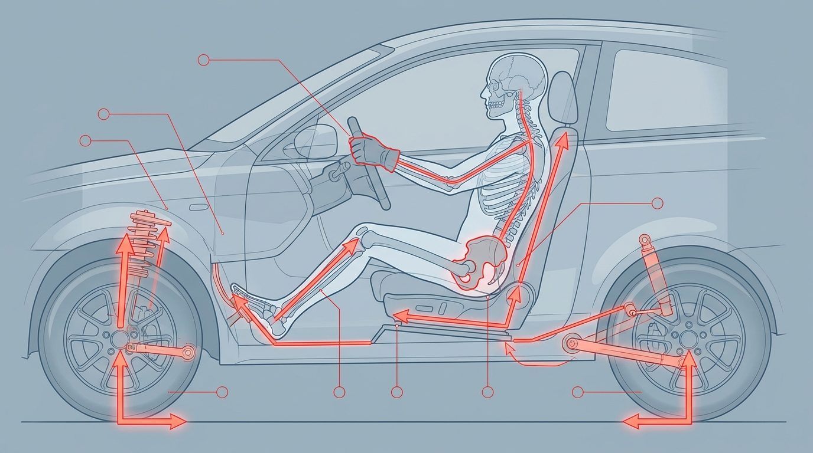
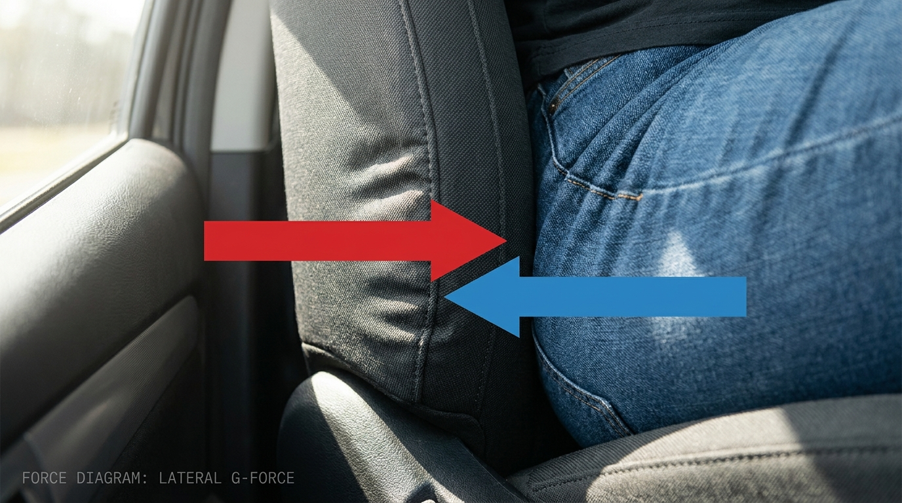
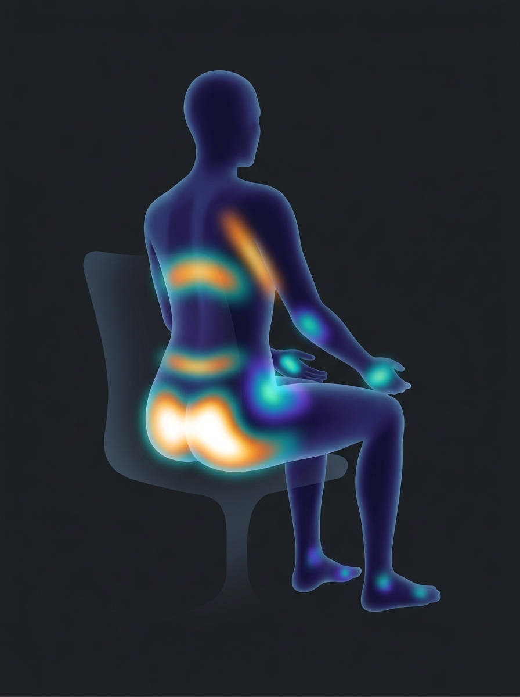
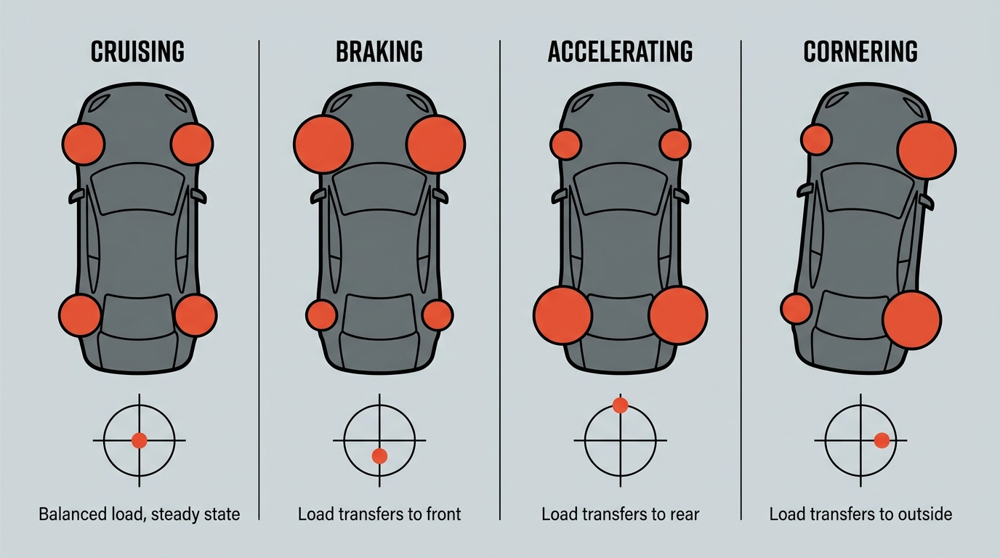

Build plan · apps/loadpath
A browser simulation of every force a car and its driver push through each other, at each of the twelve places where they touch. Real units, stated assumptions, both directions of every arrow.

Sit in a car and you are not a passenger of physics, you are a participant in it. The tires generate a force at the road. That force travels up through the suspension, into the body shell, into the seat mounts, into the foam, and finally into you. Every newton the car uses to change your direction has to be handed to you through skin and bone at a specific place.
That chain has a name in structural engineering: the load path. This simulation draws it. You set a speed, a steering angle and a brake input; the page shows where the force enters your body, how big it is, and, critically, the equal and opposite force you push back into the car.
The second half is the part almost every driving visualization skips. A cornering diagram shows the car pushing the driver sideways. It rarely shows that the driver is pushing the car sideways by exactly the same amount, through the bolster, and that a 78 kg driver is about 4.9% of a 1600 kg car's mass sitting off the centerline. The reciprocal arrows are the teaching content.

Twelve contacts. Each is a channel with a direction, a stiffness, and a sign constraint. Foam and bone push but never pull. Webbing pulls but never pushes. That asymmetry is not a detail, it is what makes the force distribution problem in section 4 hard.
At rest the distribution is unremarkable: a hot core under the sit bones, a band at the lumbar spine, light contact at the palms and soles. The whole project is about what happens to that map when the car starts changing your direction.

| Touchpoint | Anatomy | Car → driver | Driver → car | Dominant regime | Constraint | |
|---|---|---|---|---|---|---|
| 01 | Seat pan | Ischial tuberosities, posterior thigh | Vertical normal + surface friction | Body weight and vertical inertia into the seat frame | Cruise, bumps | Compression only |
| 02 | Seat back | Thoracolumbar spine, scapulae | Fore-aft normal | Thrust into the seat rails under throttle | Acceleration | Compression only |
| 03 | Side bolster | Greater trochanter, lateral ribcage | Lateral normal | Lateral thrust into the seat, offset from centerline | Cornering | Compression only, soft |
| 04 | Lap belt | Anterior superior iliac spine | Webbing tension across the pelvis | Load into floor and B-pillar anchors | Braking | Tension only, slack then stiff |
| 05 | Shoulder belt | Clavicle, sternum | Webbing tension across the torso | Load into the upper anchor and retractor | Braking | Tension only, slack then stiff |
| 06 | Steering wheel | Palms, 9 and 3 | Self-aligning torque, kickback, rim vibration | Steering torque, grip force, arm bracing | Cornering | Bidirectional, torque channel |
| 07 | Brake / throttle pedal | Right forefoot | Pedal reaction through the booster | Applied pedal force, a driver input | Braking, accel | Compression only |
| 08 | Footrest | Left foot, whole sole | Normal reaction | Voluntary bracing thrust | Cornering | Compression only |
| 09 | Floor | Feet at rest | Normal reaction | Share of static weight | Cruise | Compression only |
| 10 | Head restraint | Occiput | Fore-aft normal once the gap closes | Head inertia into the seat back | Hard accel | Compression, gap-gated |
| 11 | Knee bolster | Lateral knee, console side | Lateral normal | Knee bracing thrust | Cornering | Compression only |
| 12 | Armrest | Elbow, proximal forearm | Normal reaction | Arm weight and bracing | Cruise | Compression only |
Quasi-static rigid-body vehicle, segmented occupant. The vehicle solver answers one question: given the driver's inputs, what is the acceleration vector of the cabin? The occupant solver answers the second: given that acceleration, what force must each contact supply, and what does the body push back?
Steady-state cornering comes from the bicycle model with an understeer gradient, which is accurate enough well below the limit and honest about where it stops being accurate. Load transfer is the classic quasi-static pair. Combined braking and cornering must be checked against the friction ellipse, not against independent per-axis limits, which is the single easiest place to publish a number that cannot happen.

Equation 6 tells you the total. It does not tell you the split. If the cabin pulls 0.6 g laterally, roughly 460 N has to reach a 78 kg driver, but there are infinitely many ways to divide that between bolster, lap belt, footrest, knee and steering wheel and still satisfy the sum. The system is statically indeterminate. This is the technical heart of the project and it belongs in milestone 2, not milestone 6.
Three ways to resolve it:
Take the second, with one exception. The belt is not a linear spring, it is slack until the occupant has moved through the film spool and webbing stretch, then it is very stiff. Model it as a gap-then-spring element inside the same program rather than bolting on a special case outside it.
Follows the convention already set by apps/gridprobe: a static page, no build step, plain modules. The model layer is pure functions with no DOM access, which is what makes it unit-testable and what lets the 2D and 3D views share one truth.
apps/loadpath/ ├── index.html built · M1 ├── styles.css built · M1 ├── js/ │ ├── model/ │ │ ├── constants.js built · values plus a provenance record for each │ │ ├── touchpoints.js built · the twelve contacts: anatomy, axis, sign constraint │ │ ├── vehicle.js built · EQ 1–4: cornering, load transfer, friction ellipse │ │ ├── occupant.js built · EQ 5–6: segment masses, required force, third-law audit │ │ ├── contacts.js built · the QP: box-constrained least-norm force split │ │ └── vibration.js built · M5 · EQ 7: road PSD, quarter car, Wk/Wd, comfort banding │ ├── view2d/ │ │ ├── vectors.js built · arrows, leaders, force-to-length scaling │ │ ├── side.js built · elevation, the twelve contacts placed on anatomy │ │ ├── plan.js built · overhead, lateral channels and tyre load │ │ └── spectrum.js built · M5 · the weighted spectrum, in its own hue │ ├── view3d/scene.js M6 · gate passed, no figure │ ├── ui/ │ │ ├── controls.js built · five sliders, surface, live traction gauge │ │ └── assumptions.js built · the provenance drawer │ ├── scenarios.js built · M4 · maneuvers as input timelines, and the body lag │ ├── m0-report.js built · headless harness, kept past M1 — see note │ └── app.js built · M1 ├── images/ ├── README.md └── LEARNING.md Tests live at the repo root, following the convention already set by gridprobe and mindmap rather than the app-local path this document first predicted: tests/loadpath/model.test.js third-law audit, ellipse bounds, load transfer tests/loadpath/touchpoints.test.js the register: sign constraints, what is loaded at rest tests/loadpath/contacts.test.js the split: balance, signs, caps, and whether it picks the answer a body would grade lives in model.test.js, since it is a change to gravity rather than a new module
app.js arrived. It has been kept. It is the only thing that prints the unsourced constants on every run, it needs no browser, and deleting a working verification tool because a document predicted its removal is exactly the plan-over-reality mistake this project keeps trying to avoid. The document was wrong; the tool stays.Physics before pixels. Milestone 0 has no interface at all, it prints a table to the console, because a wrong number rendered beautifully is worse than a right number rendered plainly.
Vehicle and occupant solvers with unit tests. The third-law audit in equation 6 must pass to floating-point tolerance before any view exists. Done. 57 tests green; worst third-law residual across ten scenarios is 2.5×10−13 N. Run it with make loadpath-report.
Static reference state. Gravity, seat reaction, resting grip. The touchpoint map from table 1, rendered and labeled. Done. All twelve contacts placed on real anatomy, each selectable, each showing both directions of its force pair. Run it with make loadpath.
The unilateral QP replaces the placeholder split. The assumptions panel ships in the same milestone so no number is ever on screen without its source. Done. Solved through the dual, so a fourteen-variable program becomes a three-variable convex minimisation. Balance closes to under 10−5 N across the whole envelope. Two things went beyond what this plan specified — see below.
Overhead view added. Speed, steering angle, brake, throttle and grade become interactive. Friction ellipse clamps the display and says so. Done. Grade is real rather than faked: gravity tilts into the cabin, which is why a hill presses you into the seat back while standing still. The plan view also surfaces the per-corner tyre loads the vehicle solver has computed since M0 and nothing had ever drawn.
Scenario presets as input timelines with a transport bar. First-order lag on the body response so it stops looking instantaneous. Done. Playback is not a second code path — it is the same chain with its inputs coming from a clock. The lag sits between vehicle and occupant, so mid-maneuver the two drawings deliberately disagree and the gap is printed. It is a transient and nothing else: settled states are identical with it on or off, asserted to 1e−6 N per contact, and the frame loop stops requesting frames once it settles.
Road input as a separate frequency-domain channel drawn over the quasi-static state, with ISO comfort banding. Deliberately not a fourth axis of the same solver. Done. ISO 8608 road class and speed into a displacement PSD, a quarter car and a seat mode to the occupant, Wk and Wd evaluated as continuous transfer functions, then a band-limited RMS and EQ 7. The separation is enforced by a test rather than by intent: changing the road class must move no contact force by a single newton.
Procedural low-poly seated figure in three.js sharing the M0 model. Ship only if it clears the quality bar in the gate below. Partly done, and the gate is the reason. The view ships; the figure does not. Neither three.js nor a body survived contact with the gate — see the verdict below.
Not in the original plan. It is the outstanding obligation from section 07: the presets had to lose the sex-and-percentile labels before reaching a user-facing control, and the CLI had already shipped one. Done. Occupant mass is a live input from 40 to 130 kg, and making it one surfaced a threshold the model has always contained and nothing had ever drawn — the mass at which a driver runs out of bracing and the webbing takes over. 227 tests green.
Split: the view goes, the body is cut. The gate named the risk precisely and the risk was real — it was just wrong about where the line falls, and so was the first build.
There was a figure. Not a mesh: a stick skeleton, nineteen joints, eighteen segments, reclined torso, one foot on the pedals and one on the rest. The reasoning was that the gate's failure mode is a procedural human, and that a diagram in the same drafting language as the other two views could not fail that way because it was not attempting a person. Rendered at six camera angles, it read as an ambiguous zigzag at every one of them. Next to the side elevation, which is legible in a glance, it was worse rather than better — and a viewer squinting at a body is a viewer not reading the vector. It was cut. Its two unit tests passed the entire time, which is the part worth keeping: the tests could say it was self-consistent and could not say it was legible, and legibility was what was on trial.
What survived is everything that is not a body — the twelve contacts at their real positions, the cabin planes that locate them, and one force — plus the thing that made the view worth keeping at all. Drawing the resultant alone was not checkable: at 976 N with 765 N of that merely holding the body up, the arrow points very nearly straight up whatever the car is doing, and the claim that neither 2D drawing could show it was being asserted by a caption rather than shown by the picture. So the same vector is now drawn three times from one origin at one scale: whole, with the lateral axis dropped (all the side elevation can hold), and with the vertical dropped (all the plan can hold). The projections come out visibly shorter and pointing elsewhere, and each carries the angle it is missing — 31° and 52° in the combined case above. That is the ⊗ the side elevation has been admitting since M1, finally measured.
Three departures from this plan, all deliberate: no three.js (a dependency and a build step spent on the least certain milestone, against a promise that the app runs from file:// with nothing installed); no figure (above); and the decomposition, which this plan never specified and which is the only reason the view earns its place beside two drawings that were already doing their jobs.
Once the page reads "412 N through your left bolster", people will quote it. The model is a rigid-body approximation with a chosen contact stiffness set; it is directionally right and precisely wrong.
MitigationEvery displayed value carries a provenance tag and an uncertainty band. The assumptions drawer ships in M2, not at the end.
Real occupants respond over 0.1 to 0.3 seconds. Flesh is compliant, foam has hysteresis, and you brace before the corner arrives. A quasi-static solver snaps instantly and will look crisper than any real drive.
MitigationFirst-order lag filter on the body response in M4, with the time constant exposed as a labeled assumption. Built, and it introduced a failure mode of its own: a first-order lag approaches monotonically and can never overshoot, while a real torso on a compliant seat is second order and rocks past where it settles. The model now gives the delay and none of the rebound, which makes a hard stop look calmer than it feels. Recorded as MODEL.bodyLag, status placeholder. The guard against it becoming more than cosmetic is a test asserting that every settled state is identical with the lag on or off.
Nothing in this model integrates acceleration into speed. A scripted maneuver can therefore ask for 0.8 g of braking while the speed sits at 100 km/h forever, and the solver will draw it without complaint — a timeline that looks entirely plausible and is physically incoherent. M4 made this reachable for the first time, because a hand-authored timeline has to get the arithmetic right in two places at once.
MitigationEvery preset is checked rather than trusted: each stretch of the speed profile must match the mean longitudinal acceleration the vehicle solver actually produces over that same stretch, with a negative-control test that feeds in a deliberately incoherent timeline and asserts it is caught. The check also forced a correction to the model itself — a stopped car cannot decelerate, so brake demand is now suppressed at zero speed rather than throwing a stationary occupant forward.
Ignoring tire slip means the cornering numbers stay optimistic exactly where a driver would be losing the car. Extrapolating past the friction limit produces confident nonsense.
MitigationClamp at the friction ellipse and change the display state to "traction exceeded" rather than continuing to draw arrows.
The most common vehicle dynamics error in casual simulations: allowing 1.0 g braking and 1.0 g cornering simultaneously because each passes its own check. The ellipse is a joint constraint.
MitigationEquation 4 evaluated as one test on the resultant, with a test case that asserts the diagonal case fails.
Load transfer is a time-domain quasi-static balance. Whole-body vibration is a frequency-domain weighted RMS over an exposure window. Merging them into one solver produces a mess that satisfies neither.
MitigationKeep vibration as a separate overlay channel with its own units and its own panel. Do not average a comfort index into a force arrow. Held at M5, and enforced rather than intended: the vibration solver takes the speed and the road class and nothing else, and a test asserts that stepping the road class from A to E moves no contact force by a single newton. The channel also gets its own hue, because −−act and −−react encode direction of action on a force and vibration has no direction and is not a force.
The vibration chain has eight stages. Four are exact or standardised — the ISO 8608 PSD, the frequency transform, the double differentiation, the RMS. Two are the quarter car and the seat mode, which are representative textbook values rather than a measured vehicle. One is a guessed horizontal-to-vertical input ratio that EQ 7 then multiplies by 1.4. And the whole assembly has never been compared against a measured car, because the papers that would supply one were unreachable from this environment. The output still arrives wearing an ISO label and a comfort adjective.
MitigationTuning the placeholders until the output matched a remembered figure was considered and rejected — it would have destroyed the only useful property the number has, which is that nothing was bent to make it land anywhere. Instead the drawer carries a record saying the chain is unvalidated end to end, the panel reports the per-axis RMS and the horizontal share so a reader can see how much of the headline rests on the guess, and the spectrum is shown so the SHAPE, which is the trustworthy part, is what the eye reads first.
Building M0 surfaced a contradiction the plan did not have. The occupant presets offer a 5th percentile female, but the segment mass fractions every one of them is multiplied by come from Dempster's 1955 sample of nine male white cadavers. Changing the total mass does not change the proportions, so the "female" preset is a scaled male.
MitigationThe caveat now travels with the numbers in the constants file and prints in the M0 report. Before the presets reach a user-facing control, either source sex-specific fractions or relabel the control as a mass slider and stop implying it models a different body. Settled at M7, on the second branch. Sourcing was tried first and failed: de Leva (1996), which carries both sexes, sits behind hosts this environment cannot reach, and rebuilding its table from memory is the mistake M5 already taught once. So the labels went. Occupant mass is a slider in kilograms, the retired keys still work in the CLI but answer with the correction, and a test now scans every user-facing string for a percentile or a sex and fails if one comes back — because the next person to add a friendly-sounding preset will not have read this paragraph.
What it cost to find outThe precondition had already been broken. --driver f05 shipped in the M0 harness and was in the documented command line for seven milestones. “Before it reaches a user” is a weaker guard than it sounds when one of the surfaces is a CLI nobody counted as an interface.
M7 made occupant mass continuous, which meant sweeping the contact solver nine hundred times along one axis — the first time anything had asked it the same question that many times in a row. The split re-sums everywhere and stays inside the 10−5 N this document claims, but convergence is not uniform: about 4% of masses land near 10−6 N where 10−12 is typical, and the worst case is only twice inside the published bound.
Thirty-nine of those forty samples have two or more channels sitting exactly at their caps, which is the stall contacts.js already documents and predicts. One does not: at the light end the solver exits after a single iteration with nothing saturated, and that one is the worst of the sweep. The code's stated cause is therefore not the whole story.
MitigationRecorded rather than chased. Six micronewtons on a load of five hundred is far below anything this model can claim to know, and tightening a solver inside its own stated tolerance is not what M7 was for. The test asserts both halves — the bound holds everywhere, and the coarse cases stay rare — because a loose bound alone would pass just as happily if the solver degraded across the board.
vibium is browser automation for AI agents. A vehicle biomechanics simulation is not that. It joins gridprobe and mindmap as unrelated projects sharing a tree, and CLAUDE.md does not acknowledge that apps/ is a scratch space.
MitigationEither add one line to CLAUDE.md declaring apps/ an explicit sandbox for side projects, or move all three out. Naming it beats letting the drift continue silently.
Two of these could not be confirmed against a primary source in this session, because the network egress policy in this environment blocks the university and reference domains that host the tables. They are carried from prior knowledge and marked accordingly. They must be checked against the printed source before M0 is signed off. That is exactly the discipline the assumptions drawer exists to enforce.
| Parameter | Default | Source | Status |
|---|---|---|---|
| Vehicle mass | 1600 kg | Mid-size sedan, kerb plus one occupant | Design choice |
| Wheelbase / track | 2.70 m / 1.55 m | Mid-size sedan typical | Design choice |
| CG height | 0.55 m | Sedan typical, user-adjustable | Design choice |
| Tire friction μ | 0.90 dry, 0.60 wet | Dry and wet asphalt, passenger tire | Design choice |
| Occupant mass | 78 kg default | 50th percentile male; 5th percentile female offered as alternate | Verify at M0 |
| Segment mass fractions | head+neck 8.1%, trunk 49.7%, thigh 10.0%, shank 4.65%, foot 1.45% | Dempster (1955), reproduced in Winter. Sample: nine male white cadavers | Corroborated; sums to 1.000 exactly, asserted in tests |
| Vibration weighting | Wk on z with k=1.0; Wd on x and y with k=1.4 | ISO 2631-1:1997 | Verified by search |
| Weighting filter parameters | Wk f3=f4=12.5, Q4=0.63, f5=2.37, f6=3.35, Q5=Q6=0.91; Wd f3=f4=2.0, Q4=0.63 | Third-party implementation of ISO 2631-1 | Corroborated; ISO's own one-third-octave table was egress blocked, so the curves are checked for structure only |
| Road roughness classes | Gd(n0) = 1, 4, 16, 64, 256 ×10−6 m³ for A–E; w = 2 | ISO 8608 | Corroborated by two searches; one secondary table found was internally inconsistent |
| Quarter car and seat mode | Sprung 350 kg, unsprung 40 kg, 22 kN/m, 1500 N·s/m, tyre 200 kN/m; seat 4.5 Hz | Representative passenger-car values | Placeholder — chain never validated against a measured vehicle |
| Comfort banding | ≤0.315 not uncomfortable; 0.315–0.63 a little uncomfortable | ISO 2631-1:1997 comfort reactions scale | Verified by search |
| Seated vertical resonance | 4–6 Hz principal, falling with amplitude; 8–12 Hz second mode | Apparent-mass literature, seated whole-body vibration | Verified by search, corrected |
| Friction ellipse | (Fx/Fx,max)² + (Fy/Fy,max)² = 1 | Standard combined-slip tire model | Verified by search |
| Lateral load transfer | ΔN/N₀ = (2hroll/t)(ay/g) | Standard roll-axis formulation | Verified by search |
| Contact stiffnesses | seat pan 45 kN/m down to steering rim 3 kN/m | Effective path stiffness, tuned so the rest split matches seated-pressure findings | Placeholder; ratios matter, absolutes do not |
| Bracing capacity | rim 120 N, footrest 250 N, knee 250 N, armrest 60 N, brake pedal 400 N | Typical voluntary effort, not maximum capacity | Placeholder; sets when the belts engage |
| Seat-surface friction | not modelled | A cone constraint, needs a different solver | Omission; pushes load onto bolster and belt |
| Road grade | ±20% adjustable | Gravity tilted into the cabin frame, exact for a static tilt | Design choice |
| Pedal demand | brake to 1.1 g, throttle to 0.45 g | Driver input in g, summed into one longitudinal demand | Design choice |
| Body response lag | τ = 0.15 s, first order | Placeholder, tune against ride studies | Placeholder |
Four images, one hero and three explanatory, all generated and placed above. Every prompt is kept here in full and uncollapsed so it can be copied, re-run or edited. A document that shows an image but not what produced it is not a reproducible record.
One note from the run. The first hero attempt came back with convincing-looking annotation labels that were actually garbled non-words, the standard failure mode when this model is asked for text inside a technical diagram. The fix was an explicit instruction to render no lettering at all and to terminate every leader line in an empty circle. The prompt below is the corrected one.
A cutaway anatomical illustration of a seated human driver inside a car cabin, rendered as if the car body were transparent glass, with glowing force vectors traced from the tire contact patches up through the suspension, into the seat frame, and into the driver's pelvis, spine, hands and feet. The driver sits in a normal driving posture with hands at nine and three on the wheel. Rendered in the style of a precise technical engineering illustration crossed with a medical anatomy plate, clean vector linework over a cool grey-blue drafting ground. Lighting is flat and even with no dramatic shadows, like a printed reference plate. The composition is a three-quarter side view from slightly above and behind the driver's right shoulder. Color palette emphasizes cool slate grey and pale blue for the structure, with a single saturated vermilion red reserved only for the force vectors. The mood is clinical, exact and quietly authoritative.
A seated human figure shown in silhouette from a three-quarter rear view, with twelve contact regions glowing at different intensities across the body: the sit bones and back of the thighs, the mid back, the outer hip against a seat bolster, a diagonal band across the chest and a band across the hips where the belts cross, both palms, the right forefoot and the left sole. Rendered as a thermal pressure map in the style of a seat-comfort research diagram, smooth gradient blooms rather than hard edges. Lighting comes entirely from the glowing contact regions themselves against a dark charcoal ground. The composition is centered and symmetrical with generous negative space around the figure. Color palette runs from deep indigo at low pressure through teal and amber to a hot white core at the sit bones. The mood is scientific and calm.
A tight close-up of a driver's outer hip and thigh pressed into a car seat side bolster during hard cornering, with the foam visibly compressed and dimpled under the body, and two opposing arrows drawn over the scene: a red arrow pushing from the seat into the body, and a blue arrow of identical length pushing from the body into the seat. Rendered as a hybrid of macro photography and overlaid technical diagram, with the arrows as flat crisp vector graphics sitting on top of the photographic surface. Lighting is soft directional daylight from a side window, raking across the foam to reveal its compression. The composition is a tight horizontal crop filling the frame with the contact itself. Color palette emphasizes warm charcoal leather and grey foam, with saturated red and blue only in the arrows. The mood is intimate and physical.
A four-panel infographic strip showing one car in overhead plan view in each panel, cruising, braking, accelerating and cornering, with the four tire contact patches drawn as circles that grow and shrink to show load transfer between them, and a small friction ellipse diagram beneath each panel with a dot marking the current combined-acceleration state. Rendered in a flat editorial infographic style with confident line weights and clear typographic labels in a condensed sans serif. Lighting is uniform and flat as in printed diagrams. The composition is a horizontal strip of four equal panels separated by thin hairline rules. Color palette is cool paper grey and near-black ink with a single vermilion accent for the loaded tires and the state dot. The mood is instructional and precise.
transparent glass car cabin cutaway, seated driver anatomy visible, glowing vermilion force vectors traced from tire contact patches through suspension into pelvis spine hands and feet, technical engineering illustration crossed with medical anatomy plate, cool slate blue drafting ground, flat even reference-plate lighting, three-quarter view over the right shoulder --ar 16:9 --style raw --stylize 200 --v 7
seated human silhouette three-quarter rear view, twelve glowing contact regions at sit bones thighs mid back outer hip chest belt band palms and feet, thermal pressure map, seat comfort research diagram, smooth gradient blooms on dark charcoal ground, indigo to teal to amber to hot white core, centered symmetrical composition --ar 3:4 --style raw --stylize 150 --v 7